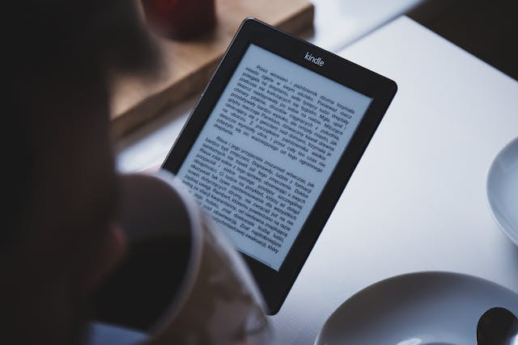
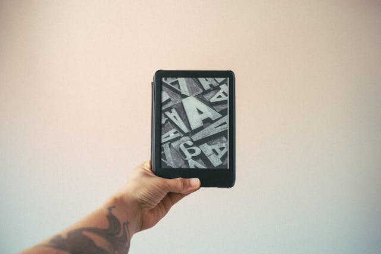
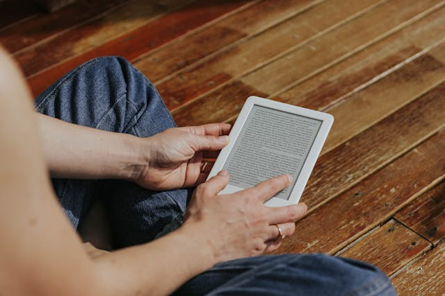

Kindle - Minha Tecnologia Favorita
O Kindle é um leitor digital desenvolvido pela Amazon focado em leitura de livros digitais. Diferente de tablets comuns, ele utiliza a tecnologia de tela e-ink, que simula o papel e reduz bastante o cansaço visual durante leituras longas. Seu principal objetivo é oferecer uma experiência prática para quem lê com frequência, permitindo carregar centenas de livros em um único dispositivo leve e portátil.
Como o kindle ajuda as pessoas?
O Kindle facilita o acesso à leitura de forma rápida e organizada. Em poucos segundos é possível comprar ou baixar livros digitais sem precisar sair de casa. Além disso, o dispositivo possui bateria de longa duração, tamanho compacto e recursos como ajuste de brilho, alteração de fonte, marcações e dicionário integrado.
Para estudantes e profissionais, ele ajuda principalmente na mobilidade e organização. Em vez de carregar vários livros físicos, tudo fica armazenado em um único aparelho. Já para leitores casuais, a praticidade e o conforto visual costumam ser os principais atrativos.
Qual o grande diferencial?
O maior diferencial do Kindle é sua tela e-ink. Muita gente acha que ele funciona como um tablet, mas não é essa a proposta. A tela foi feita especificamente para leitura, com aparência semelhante ao papel e excelente visibilidade até mesmo sob luz do sol.
Outro ponto forte é o ecossistema da Amazon. A integração com a loja da empresa facilita encontrar livros rapidamente, sincronizar leituras entre dispositivos e acessar serviços como o Kindle Unlimited.
Apesar disso, existe um ponto que normalmente é ignorado: o Kindle é excelente para leitura linear, mas não substitui totalmente livros físicos em todos os cenários. Livros técnicos com muitas imagens, diagramas complexos ou necessidade de consulta rápida às vezes funcionam melhor no papel ou em tablets maiores.
Por que devo utilizar essa tecnologia?
- Leitura mais confortável para os olhos;
- Bateria que pode durar semanas;
- Armazenamento para centenas de livros;
- Facilidade para comprar e baixar livros digitais;
- Leve e fácil de transportar;
- Recursos úteis como marcações e dicionário;
- Economia de espaço físico em casa;
- Boa opção para quem lê diariamente.
Galeria de Imagens


